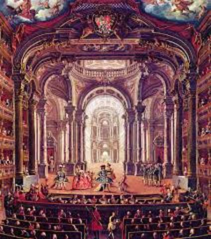
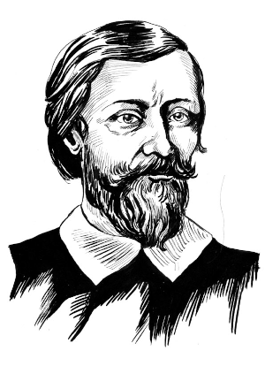
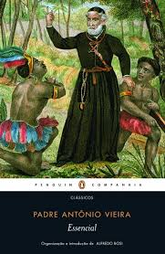

A "Arte Barroco" é um movimento cultural que emergiu das comunidades marginalizadas ao redor do mundo. Essa forma de expressão artística é intrinsecamente ligada à vida nas favelas, guetos e áreas urbanas desfavorecidas. Neste artigo, exploraremos em detalhes a história, a influência e o significado da Arte Barraco, destacando sua importância na cultura contemporânea. Saiba mais

Gregório de Matos foi um dos mais conhecidos poetas da literatura feita durante o século XVII, período da cultura colonial brasileira. É também a grande expressão do movimento barroco no Brasil e o patrono da cadeira número 16 da Academia Brasileira de Letras. Saiba mais

Padre Antônio Vieira foi um dos maiores escritores e oradores do Barroco Literário da língua portuguesa. Ele nasceu em Lisboa, Portugal, em 6 de fevereiro de 1608, filho de Cristóvão Vieira e Maria de Azevedo. Saiba mais